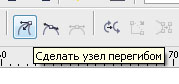

Темы для написания уроков!
Sancho / 13.07.2010, 11:51/20:32
Форум:
Так как сам бывает пишу уроки, то часто не знаю про что написать, а если знаю то тема настолько обширная что и желание то писать пропадает. Самый оптимальный вариант это мини-уроки. И читать немного (учитывая что читать у нас народ не особо то и любит) и в то же время какой то объём полезной информации. Типа "тише едешь -- дальше будешь" :)
Так что предлагаю в этой теме выкладывать темы для тех кто пишет уроки, что бы они знали что актуально и необходимо посетителям.
Ну и сразу пожалуй начну:
1. Трассировка растровых изображений в CorelDRAW (описание опций на примерах).
2. Принт мёрдж, всё о нумерации.
П.С. Незабываем что любой авторский урок даёт вам нелишний плюс в этом деле.
П.С.С. Данная тема только для выкладывания тем. Сами уроки выкладывать каждый урок в отдельную тему.
Нечто вроде этого:
http://ru.fotolia.com/id/9568339
Надеюсь тебе это поможет.
Красивый витраж в Кореле (со стеклянной блескучестью, задним свечением и другими вкусняшами :) ). И чтоб без растровых штучек 8-)
Это уже не витраж ,а украшение нанайской девчонки будет
Тем не менее просю такой урок.
В этой задаче нет совершенно ничего оригинального.
Всё творчество будет состоять в придумывании самого орнамента для витража по форме окна, для которого он создаётся.
Толщину линий, образующих орнамент, выбрать соответственно толщине каркаса (проволоки) витража и перевести в объекты.
Затем с помощью инструмента Интеллектуальная заливка заливайте ячейки-пустоты, задавайте им необходимый цвет.
Вот и всё.
А всякие там зрительные эффекты для придания вида "стекляшности" можно создать, воспользовавшись советами Сергея к уроку Весёленькие буковки, или самому поэкспериментировать с разными бликами и высветлениями.
Подскажите пожалуйста, можно ли сделать  в процессе рисования инструментом Перо (как в фотошопе).
Нашёл только, удерживая Ctrl, возможность редактирования в режиме Перо. Повторюсь, но как сделать, в процессе рисования угол перегибаемым?
Или может другой инструмент выбрать, где это возможно?
Спасибо.
Попробуй, щёлкая мышкой, не вытягивать вектор, а сразу отпускать кнопку. Затем щёлкай следующую точку.
Страницы